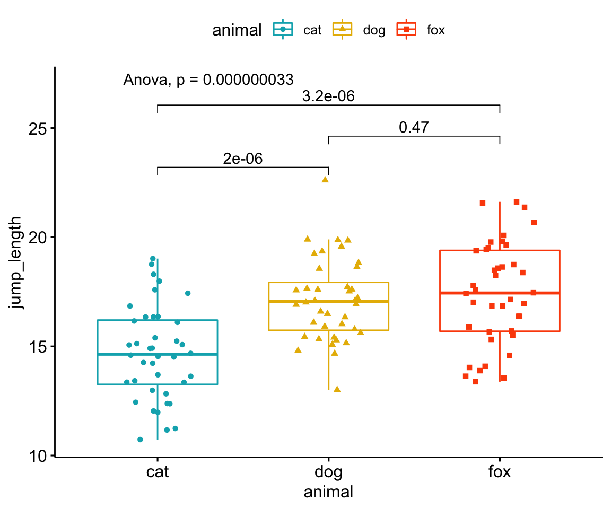
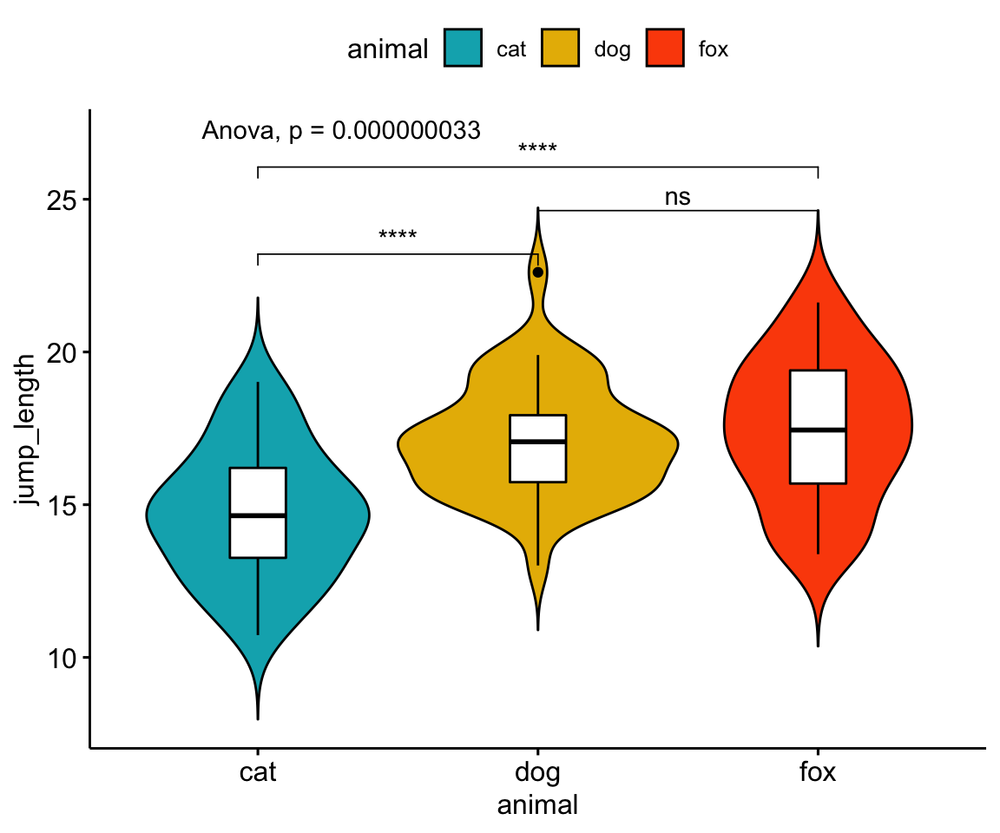

17 Die ANOVA
Du findest auf YouTube Grundlagen in R als Video Reihe. Ich werde zwar alles nochmal hier als Text aufschreiben, aber manchmal ist das Sehen und Hören dann einfacher.
Die ANOVA (eng. analysis of variance) ist wichtig. Was für ein schöner Satz um anzufangen. Wir brauchen die ANOVA aus mehreren Gründen. Die Hochzeiten der ANOVA sind eigentlich vorbei, wir haben in der Statistik für viele Fälle mittlerweile besser Werkzeuge, aber als Allrounder ist die ANOVA immer noch nutzbar.
Die tolle Webseite Data Science for Agriculture in R liefert eine Vielzahl von experimentellen Designs sowie deren Auswertung. Neben anderen komplexeren Designs, auch diese einfacheren Designs, die jeder kennen sollte.
Completely randomized design, ist das Standarddesign für ein Feldexperiment.
Randomized complete block design (RCBD) with 1 factor, beschreibt ein Experiment mit Blöcken und einem Behandlungsfaktor.
Randomized complete block design (RCBD) with 2 factors, beschreibt ein Experiment mit Blöcken und einem Behandlungsfaktor sowie einem weiteren Faktor.
Latin square design, ist ein etwas spezielleres Design, wird aber auch viel genutzt.
Wir gehen in einem späteren Kapitel nochmal auf die experimentellen Designs ein.
Wofür brauchen wir die ANOVA?
- Wir brauchen die ANOVA um mehr als zwei Gruppen gleichzeitig miteinander zu vergleichen. Das heißt wir haben einen Faktor mit mehr als zwei Levels und wollen wissen, ob sich mindestens zwei Level bzw. Gruppen im mittelwert unterscheiden.
- Wir brauchen die ANOVA und deren Varianzzerlegung in der Züchtung. Hier speilt die ANOVA eine gewichtige Rolle bei der Abschätzung des genetischen Effekts. Wir werden aktuell (Stand Ende 2022) hierauf noch nicht tiefer eingehen.
- Wir nutzen die ANOVA in vielen Anwendunsggebieten als eine Arte Vortest um zu schauen, ob sich ein Effekt in den Daten verbirgt. Eigentlich stammt dieses Ritual aus ANOVA als Vortest und dann ein Posthoc Test noch aus der Zeit, wo wir keine moderen Rechner zu Verfügung hatten. Damals machte diese Reihenfolge noch Sinn. Wir werdend arüber aber später nochmal lesen.
- Experimentelle Designs sind darauf ausgelegt mit der ANOVA ausgewertet zu werden. Insbesondere in den Agrawissenschaften hat die ANOVA daher eine historische Bedeutung. Insbesondere durch die enge Verzahnung vom Experiment auf dem Feld und der eigentlichen Auswertung mit der ANOVA.
Wir sehen also, dass die ANOVA zum einen alt ist, aber auch heute noch viel verwendet wird. Daher werden wir in diesem langem Kapitel uns einmal mit der ANOVA ausgiebig beschäftigen. Fangen wir also an, dieses großartige Schwerzeitaschenmesser der Statistik besser zu verstehen.
Die einfaktorielle ANOVA vergleicht die Parameter mehrerer Normalverteilungen miteinander. Oder etwas anders formuliert, vergleicht die ANOVA die Mittlelwerte von mehreren Gruppen bzw. Behandlungen miteinander.
Die zweifaktorielle ANOVA vergleicht die Parameter mehrerer Normalverteilungen miteinander von zwei Faktoren. Oder etwas anders formuliert, vergleicht die ANOVA die Mittlelwerte von mehreren Gruppen bzw. Behandlungen miteinander. Dabei kann die zweifaktorielle ANOVA auch die Interaktion zwischen zwei Variablen abbilden.
Wir rechnen keine ANOVA in der Klausur per Hand sondern interpretieren die Ausgabe der R Funktionen einer einfaktoriellen oder zweifaktoriellen ANOVA. Auch hier gilt, überprüfe was du in der Vorlesung gehört hast!
Bitte schau dir unbedingt die Aufgaben in den gesammelten Klausurfragen auf GitHub an um eine Idee zu haben, welche Fragen zu der ANOVA drankommen.
Wenn kein \(F_{\alpha = 5\%}\) in der Klausur gegeben ist, setzen wir \(F_{\alpha = 5\%} = 3.55\).
17.1 Genutzte R Pakete für das Kapitel
Wir wollen folgende R Pakete in diesem Kapitel nutzen.
pacman::p_load(tidyverse, magrittr, broom,
readxl, effectsize, ggpubr)Am Ende des Kapitels findest du nochmal den gesamten R Code in einem Rutsch zum selber durchführen oder aber kopieren.
17.2 Einfaktorielle ANOVA
Die einfaktorielle ANOVA ist die simpelste Form der ANOVA. Wir nutzen einen Faktor mit mehr als zwei Leveln. Im Rahmen der einfaktoriellen ANOVA wollen wir usn auch die ANOVA theoretisch einmal anschauen. Danach wie die einfaktorielle ANOVA in R genutzt wird. Ebenso wie wir die einfaktorielle ANOVA visualsieren. Abschließend müssen wir uns noch überlegen, ob es einen Effektschätzer für die einfaktorielle ANOVA gibt.

Die einfaktorielle ANOVA verlangt ein normalverteiltes \(y\) sowie Varianzhomogenität über den Behandlungsfaktor \(x\). Daher alle Level von \(x\) sollen die gleiche Varianz haben.
Unsere Annahme an die Daten \(D\) ist, dass das dein \(y\) normalverteilt ist und das die Level vom \(x\) homogen in den Varianzen sind. Später mehr dazu, wenn wir beides nicht vorliegen haben…
17.2.1 Daten für die einfaktorielle ANOVA
Wir wollen uns nun erstmal den einfachsten Fall anschauen mit einem simplen Datensatz. Wir nehmen ein normalverteiltes \(y\) aus den Datensatz flea_dog_cat_fox.csv und einen Faktor mit mehr als zwei Leveln. Hätten wir nur zwei Level, dann können wir auch einen t-Test rechnen können.
Im Folgenden selektieren mit der Funktion select() die beiden Spalten jump_length als \(y\) und die Spalte animal als \(x\). Danach müssen wir noch die Variable animal in einen Faktor mit der Funktion as_factor() umwandeln.
fac1_tbl <- read_csv2("data/flea_dog_cat_fox.csv") %>%
select(animal, jump_length) %>%
mutate(animal = as_factor(animal))Wir erhalten das Objekt fac1_tbl mit dem Datensatz in Tabelle 17.1 nochmal dargestellt.
| animal | jump_length |
|---|---|
| dog | 5.7 |
| dog | 8.9 |
| dog | 11.8 |
| dog | 8.2 |
| dog | 5.6 |
| dog | 9.1 |
| dog | 7.6 |
| cat | 3.2 |
| cat | 2.2 |
| cat | 5.4 |
| cat | 4.1 |
| cat | 4.3 |
| cat | 7.9 |
| cat | 6.1 |
| fox | 7.7 |
| fox | 8.1 |
| fox | 9.1 |
| fox | 9.7 |
| fox | 10.6 |
| fox | 8.6 |
| fox | 10.3 |
Wir bauen daher mit den beiden Variablen mit dem Objekt fac1_tbl folgendes Modell für später:
\[ jump\_length \sim animal \]
Bevor wir jetzt das Modell verwenden, müssen wir uns nochmal überlegen, welchen Schluß wir eigentlich über die Nullhypothese machen. Wir immer können wir nur die Nullhypothese ablehnen. Daher überlegen wir uns im Folgenden wie die Nullhypothese in der einfaktoriellen ANOVA aussieht. Dann bilden wir anhand der Nullhypothese noch die Alternativehypothese.
17.2.2 Hypothesen für die einfaktorielle ANOVA
Die ANOVA betrachtet die Mittelwerte und nutzt die Varianzen um einen Unterschied nachzuweisen. Daher haben wir in der Nullhypothese als Gleichheitshypothese. In unserem Beispiel lautet die Nullhypothese, dass die Mittelwerte jedes Levels des Faktors animal gleich sind.
Die Alternative lautet, dass sich mindestens ein paarweiser Vergleich in den Mittelwerten unterschiedet. Hierbei ist das mindestens ein Vergleich wichtig. Es können sich alle Mittelwerte unterschieden oder eben nur ein paar. Wenn eine ANOVA die \(H_0\) ablehnt, also ein signifikantes Ergebnis liefert, dann wissen wir nicht, welche Mittelwerte sich unterscheiden.
\[\begin{align*} H_A: &\; \bar{y}_{cat} \ne \bar{y}_{dog}\\ \phantom{H_A:} &\; \bar{y}_{cat} \ne \bar{y}_{fox}\\ \phantom{H_A:} &\; \bar{y}_{dog} \ne \bar{y}_{fox}\\ \phantom{H_A:} &\; \mbox{für mindestens ein Paar} \end{align*}\]Wir schauen uns jetzt einmal die ANOVA theoretisch an bevor wir uns mit der Anwendung der ANOVA in R beschäftigen.
17.2.3 Einfaktoriellen ANOVA theoretisch
Kommen wir zurück zu den Daten in Tabelle 17.1. Wenn wir die ANOVA per Hand rechnen wollen, dann ist nicht das Long Format die beste Wahl sondern das Wide Format. Wir haben ein balanciertes Design vorliegen, dass heißt in jeder Level sind die gleiche Anzahl Beobachtungen. Wir schauen uns jeweils sieben Flöhe von jeder Tierart an. Für eine ANOVA ist aber ein balanciertes Design nicht notwendig, wir können auch mit ungleichen Gruppengrößen eine ANOVA rechnen.
In Tabelle 17.2 sehen wir die Daten einmal als Wide Format dargestellt.
| j | dog | cat | fox |
|---|---|---|---|
| 1 | 5.7 | 3.2 | 7.7 |
| 2 | 8.9 | 2.2 | 8.1 |
| 3 | 11.8 | 5.4 | 9.1 |
| 4 | 8.2 | 4.1 | 9.7 |
| 5 | 5.6 | 4.3 | 10.6 |
| 6 | 9.1 | 7.9 | 8.6 |
| 7 | 7.6 | 6.1 | 10.3 |
Wir können jetzt für jedes de Level den Mittelwert über all \(j=7\) Beobachtungen berechnen.
\[\begin{align*} \bar{y}_{dog} &= 4.74 \\ \bar{y}_{cat} &= 8.13 \\ \bar{y}_{fox} &= 9.16 \\ \end{align*}\]Wir tuen jetzt für einen Moment so, als gebe es den Faktor animal nicht in den Daten und schauen uns die Verteilung der einzelnen Beobachtungen in Abbildung 17.1 (a) einmal an. Wir sehen das sich die Beobachtungen von ca. 2.2cm bis 11 cm streuen. Woher kommt nun diese Streuung bzw. Varianz? Was ist die Quelle der Varianz? In Abbildung 17.1 (b) haben wir die Punkte einmal nach dem Faktor animal eingefärbt. Wir sehen, dass die blauen Beobachtungen eher weitere Sprunglängen haben als die grünen Beobachtungen. Wir gruppieren die Beobachtungen in Abbildung 17.1 (c) nach dem Faktor animal und sehen, dass ein Teil der Varianz der Daten von dem Faktor animal ausgelöst wird.


Gehen wir einen Schritt weiter und zeichnen einmal das globale Mittel in die Abbildung 17.2 (a) von \(\bar{y}_{..} = 7.34\) und lassen die Beobachtungen gruppiert nach dem Faktor animal. Wir sehen, dass die Level des Faktors animal um das globale Mittel streuen. Was ja auch bei einem Mittelwert zu erwarten ist. Wir können jetzt in Abbildung 17.2 (b) die lokalen Mittel für die einzelnen Level dog, catund fox ergänzen. Und abschließend in Abbildung 17.2 (c) die Abweichungen \(\\beta_i\) zwischen dem globalen Mittel \(\bar{y}_{..} = 7.34\) und den einzelnen lokalen Mittel berechnen. Die Summe der Abweichungen \(\\beta_i\) ist \(0.79 + (-2.6) + 1.81 \approx 0\). Das ist auch zu erwarten, den das globale Mittel muss ja per Definition als Mittelwert gleich großen Abstand “nach oben” wie “nach unten” haben.


Wir tragen die Werte der lokalen Mittlwerte \(\bar{y}_{i.}\) und deren Abweichungen \(\beta_i\) vom globalen Mittelwert \(\bar{y}_{..} = 7.34\) noch in die Tabelle 17.3 ein. Wir sehen in diesem Beispiel warum das Wide Format besser ist, wenn wir die lokalen Mittelwerte und die Abbweichungen per Hand berechnen. Da wir in der Anwendung aber nie die ANOVA per Hand rechnen, liegen unsere Daten immer in R als Long Format vor.
| j | dog | cat | fox |
|---|---|---|---|
| 1 | 5.7 | 3.2 | 7.7 |
| 2 | 8.9 | 2.2 | 8.1 |
| 3 | 11.8 | 5.4 | 9.1 |
| 4 | 8.2 | 4.1 | 9.7 |
| 5 | 5.6 | 4.3 | 10.6 |
| 6 | 9.1 | 7.9 | 8.6 |
| 7 | 7.6 | 6.1 | 10.3 |
| \(\bar{y}_{i.}\) | \(4.74\) | \(8.13\) | \(9.16\) |
| \(\beta_i\) | \(-2.6\) | \(0.79\) | \(1.81\) |
| All level means are equal. | = | The differences between level means and the total mean are small. |
Die ANOVA vergleicht
- die Varianz der einzelnen Mittelwerte der Level zum globalen Mittel (eng. variability between levels)
- und die Varianz der Beobachtungen zu den einzelnen Mittelwerten der Level (eng. variability within one level)
| animal (x) | jump_length (y) | \(\boldsymbol{\bar{y}_{i.}}\) | SS\(_{\boldsymbol{animal}}\) | SS\(_{\boldsymbol{error}}\) | SS\(_{\boldsymbol{total}}\) |
|---|---|---|---|---|---|
| dog | \(5.7\) | \(4.74\) | \((4.74 - 7.34)^2 = 6.76\) | \((5.7 - 4.74)^2 = 0.92\) | \((5.7 - 7.34)^2 = 2.69\) |
| dog | \(8.9\) | \(4.74\) | \((4.74 - 7.34)^2 = 6.76\) | \((8.9 - 4.74)^2 = 17.31\) | \((8.9 - 7.34)^2 = 2.43\) |
| dog | \(11.8\) | \(4.74\) | \((4.74 - 7.34)^2 = 6.76\) | \((11.8 - 4.74)^2 = 49.84\) | \((11.8 - 7.34)^2 = 19.89\) |
| dog | \(8.2\) | \(4.74\) | \((4.74 - 7.34)^2 = 6.76\) | \((8.2 - 4.74)^2 = 11.97\) | \((8.2 - 7.34)^2 = 0.74\) |
| dog | \(5.6\) | \(4.74\) | \((4.74 - 7.34)^2 = 6.76\) | \((5.6 - 4.74)^2 = 0.74\) | \((5.6 - 7.34)^2 = 3.03\) |
| dog | \(9.1\) | \(4.74\) | \((4.74 - 7.34)^2 = 6.76\) | \((9.1 - 4.74)^2 = 19.01\) | \((9.1 - 7.34)^2 = 3.10\) |
| dog | \(7.6\) | \(4.74\) | \((4.74 - 7.34)^2 = 6.76\) | \((7.6 - 4.74)^2 = 8.18\) | \((7.6 - 7.34)^2 = 0.07\) |
| cat | \(3.2\) | \(8.13\) | \((8.13 - 7.34)^2 = 0.62\) | \((3.2 - 8.13)^2 = 24.30\) | \((3.2 - 7.34)^2 = 17.14\) |
| cat | \(2.2\) | \(8.13\) | \((8.13 - 7.34)^2 = 0.62\) | \((2.2 - 8.13)^2 = 35.16\) | \((2.2 - 7.34)^2 = 26.42\) |
| cat | \(5.4\) | \(8.13\) | \((8.13 - 7.34)^2 = 0.62\) | \((5.4 - 8.13)^2 = 7.45\) | \((5.4 - 7.34)^2 = 3.76\) |
| cat | \(4.1\) | \(8.13\) | \((8.13 - 7.34)^2 = 0.62\) | \((4.1 - 8.13)^2 = 16.24\) | \((4.1 - 7.34)^2 = 10.50\) |
| cat | \(4.3\) | \(8.13\) | \((8.13 - 7.34)^2 = 0.62\) | \((4.3 - 8.13)^2 = 14.67\) | \((4.3 - 7.34)^2 = 9.24\) |
| cat | \(7.9\) | \(8.13\) | \((8.13 - 7.34)^2 = 0.62\) | \((7.9 - 8.13)^2 = 0.05\) | \((7.9 - 7.34)^2 = 0.31\) |
| cat | \(6.1\) | \(8.13\) | \((8.13 - 7.34)^2 = 0.62\) | \((6.1 - 8.13)^2 = 4.12\) | \((6.1 - 7.34)^2 = 1.54\) |
| fox | \(7.7\) | \(9.16\) | \((9.16 - 7.34)^2 = 3.31\) | \((7.7 - 9.16)^2 = 2.13\) | \((7.7 - 7.34)^2 = 0.13\) |
| fox | \(8.1\) | \(9.16\) | \((9.16 - 7.34)^2 = 3.31\) | \((8.1 - 9.16)^2 = 1.12\) | \((8.1 - 7.34)^2 = 0.58\) |
| fox | \(9.1\) | \(9.16\) | \((9.16 - 7.34)^2 = 3.31\) | \((9.1 - 9.16)^2 = 0.00\) | \((9.1 - 7.34)^2 = 3.10\) |
| fox | \(9.7\) | \(9.16\) | \((9.16 - 7.34)^2 = 3.31\) | \((9.7 - 9.16)^2 = 0.29\) | \((9.7 - 7.34)^2 = 5.57\) |
| fox | \(10.6\) | \(9.16\) | \((9.16 - 7.34)^2 = 3.31\) | \((10.6 - 9.16)^2 = 2.07\) | \((10.6 - 7.34)^2 = 10.63\) |
| fox | \(8.6\) | \(9.16\) | \((9.16 - 7.34)^2 = 3.31\) | \((8.6 - 9.16)^2 = 0.31\) | \((8.6 - 7.34)^2 = 1.59\) |
| fox | \(10.3\) | \(9.16\) | \((9.16 - 7.34)^2 = 3.31\) | \((10.3 - 9.16)^2 = 1.30\) | \((10.3 - 7.34)^2 = 8.76\) |
\(SS_{animal} = \sum_{i=1}^{k}n_i(\bar{y}_{i.} - \bar{y}_{..})^2\)


| Varianzquelle | df | Sum of squares | Mean squares | F\(_{\boldsymbol{calc}}\) |
|---|---|---|---|---|
| animal | \(k-1\) | \(SS_{animal} = \sum_{i=1}^{k}n_i(\bar{y}_{i.} - \bar{y}_{..})^2\) | \(MS_{animal} = \cfrac{SS_{animal}}{k-1}\) | \(F_{calc} = \cfrac{MS_{animal}}{MS_{error}}\) |
| error | \(n-k\) | \(SS_{error} = \sum_{i=1}^{k}\sum_{j=1}^{n_i}(y_{ij} - \bar{y}_{i.})^2\) | \(MS_{error} = \cfrac{SS_{error}}{N-k}\) | |
| total | \(n-1\) | \(SS_{total} = \sum_{i=1}^{k}\sum_{j=1}^{n_i}(y_{ij} - \bar{y}_{..})^2\) |
| Varianzquelle | df | Sum of squares | Mean squares | F\(_{\boldsymbol{calc}}\) |
|---|---|---|---|---|
| animal | \(3-1\) | \(SS_{animal} = 74.68\) | \(MS_{animal} = \cfrac{74.68}{3-1} = 37.34\) | \(F_{calc} = \cfrac{37.34}{3.14} = 11.89\) |
| error | \(21-3\) | \(SS_{error} = 56.53\) | \(MS_{error} = \cfrac{56.53}{18} = 3.14\) | |
| total | \(21-1\) | \(SS_{total} = 131.21\) |
Der kritische F Wert \(F_{\alpha = 5\%}\) lautet für die einfaktorielle ANOVA in diesem konkreten Beispiel mit \(F_{\alpha = 5\%} = 3.55\).
Die Enstscheidungsregel nach der F Testatitik lautet, die \(H_0\) abzulehnen, wenn \(F_{calc} > F_{\alpha = 5\%}\).
Bei der Entscheidung mit der berechneten Teststatistik \(F_{calc}\) gilt, wenn \(F_{calc} \geq F_{\alpha = 5\%}\) wird die Nullhypothese (H\(_0\)) abgelehnt.
Achtung – Wir nutzen die Entscheidung mit der Teststatistik nur und ausschließlich in der Klausur. In der praktischen Anwendung hat die Betrachtung der berechneten Teststatistik keine Verwendung mehr.
17.2.4 Einfaktoriellen ANOVA in R
fit_1 <- lm(jump_length ~ animal, data = fac1_tbl) %>%
anova
fit_1Analysis of Variance Table
Response: jump_length
Df Sum Sq Mean Sq F value Pr(>F)
animal 2 74.6829 37.3414 11.8904 0.00051129 ***
Residuals 18 56.5286 3.1405
---
Signif. codes: 0 '***' 0.001 '**' 0.01 '*' 0.05 '.' 0.1 ' ' 1fit_1 %>% eta_squaredFor one-way between subjects designs, partial eta squared is equivalent to eta squared.
Returning eta squared.# Effect Size for ANOVA
Parameter | Eta2 | 95% CI
-------------------------------
animal | 0.57 | [0.27, 1.00]
- One-sided CIs: upper bound fixed at (1).
17.3 Zweifaktorielle ANOVA
Die zweifaktorielle ANOVA verlangt ein normalverteiltes \(y\) sowie Varianzhomogenität jeweils separat über beide Behandlungsfaktor \(x_1\) und \(x_2\). Daher alle Level von \(x_1\) sollen die gleiche Varianz haben. Ebenso sollen alle Level von \(x_2\) die gleiche Varianz haben.
Unsere Annahme an die Daten \(D\) ist, dass das dein \(y\) normalverteilt ist und das die Level vom \(x_1\) und \(x_2\) jewiels für sich homogen in den Varianzen sind. Später mehr dazu, wenn wir beides nicht vorliegen haben…
17.3.1 Daten für die zweifaktorielle ANOVA
fac2_tbl <- read_csv2("data/flea_dog_cat_fox_site.csv") %>%
select(animal, site, jump_length) %>%
mutate(animal = as_factor(animal),
site = as_factor(site))| animal | site | jump_length |
|---|---|---|
| cat | city | 12.04 |
| cat | city | 11.98 |
| cat | city | 16.10 |
| cat | city | 13.42 |
| cat | city | 12.37 |
| cat | city | 16.36 |
| cat | city | 14.91 |
| cat | city | 11.17 |
| cat | city | 12.38 |
| cat | city | 15.06 |
| cat | smalltown | 15.24 |
| cat | smalltown | 13.36 |
| cat | smalltown | 15.08 |
| cat | smalltown | 12.83 |
| cat | smalltown | 14.68 |
| cat | smalltown | 10.73 |
| cat | smalltown | 13.35 |
| cat | smalltown | 14.54 |
| cat | smalltown | 12.99 |
| cat | smalltown | 14.51 |
| cat | village | 17.59 |
| cat | village | 11.24 |
| cat | village | 12.44 |
| cat | village | 13.63 |
| cat | village | 14.92 |
| cat | village | 17.43 |
| cat | village | 18.30 |
| cat | village | 16.35 |
| cat | village | 16.34 |
| cat | village | 14.23 |
| cat | field | 13.70 |
| cat | field | 15.13 |
| cat | field | 17.99 |
| cat | field | 14.60 |
| cat | field | 16.16 |
| cat | field | 14.26 |
| cat | field | 15.39 |
| cat | field | 16.85 |
| cat | field | 19.02 |
| cat | field | 18.76 |
| dog | city | 19.35 |
| dog | city | 17.10 |
| dog | city | 19.85 |
| dog | city | 15.33 |
| dog | city | 15.15 |
| dog | city | 19.57 |
| dog | city | 15.44 |
| dog | city | 16.09 |
| dog | city | 15.91 |
| dog | city | 13.01 |
| dog | smalltown | 17.72 |
| dog | smalltown | 17.11 |
| dog | smalltown | 17.57 |
| dog | smalltown | 17.12 |
| dog | smalltown | 16.02 |
| dog | smalltown | 22.61 |
| dog | smalltown | 16.49 |
| dog | smalltown | 18.64 |
| dog | smalltown | 17.21 |
| dog | smalltown | 19.90 |
| dog | village | 16.60 |
| dog | village | 15.28 |
| dog | village | 16.91 |
| dog | village | 15.08 |
| dog | village | 18.56 |
| dog | village | 16.34 |
| dog | village | 17.61 |
| dog | village | 14.80 |
| dog | village | 17.52 |
| dog | village | 16.93 |
| dog | field | 15.78 |
| dog | field | 17.02 |
| dog | field | 15.41 |
| dog | field | 15.61 |
| dog | field | 19.87 |
| dog | field | 19.24 |
| dog | field | 17.65 |
| dog | field | 18.83 |
| dog | field | 17.60 |
| dog | field | 14.67 |
| fox | city | 19.50 |
| fox | city | 18.49 |
| fox | city | 19.78 |
| fox | city | 19.45 |
| fox | city | 21.56 |
| fox | city | 21.37 |
| fox | city | 18.64 |
| fox | city | 20.08 |
| fox | city | 21.62 |
| fox | city | 20.68 |
| fox | smalltown | 19.81 |
| fox | smalltown | 17.78 |
| fox | smalltown | 19.65 |
| fox | smalltown | 16.38 |
| fox | smalltown | 17.46 |
| fox | smalltown | 17.02 |
| fox | smalltown | 19.38 |
| fox | smalltown | 15.89 |
| fox | smalltown | 17.15 |
| fox | smalltown | 17.43 |
| fox | village | 15.32 |
| fox | village | 17.59 |
| fox | village | 15.70 |
| fox | village | 18.58 |
| fox | village | 16.85 |
| fox | village | 18.25 |
| fox | village | 18.75 |
| fox | village | 16.96 |
| fox | village | 13.38 |
| fox | village | 18.38 |
| fox | field | 16.85 |
| fox | field | 13.55 |
| fox | field | 13.89 |
| fox | field | 15.67 |
| fox | field | 16.38 |
| fox | field | 14.59 |
| fox | field | 14.03 |
| fox | field | 13.63 |
| fox | field | 14.09 |
| fox | field | 15.52 |
17.3.2 Hypothesen die zweifaktorielle ANOVA
Wir haben für jeden Faktor ein Hypothesenpaar.
Einmal für animal
Einmal für site
Einmal für die Interaktion animal:site
Decision rule: reject \(H_0\) if \(F > F_{df_A = k-1,\,df_E=N-k,\,1-\alpha}\)
17.3.3 Zweifaktoriellen ANOVA in R
17.3.3.1 Ohne Interaktionsterm
Beispieldaten sind in Abbildung 17.5 abgebildet.

fit_2 <- lm(jump_length ~ animal + site, data = fac2_tbl) %>%
anova
fit_2Analysis of Variance Table
Response: jump_length
Df Sum Sq Mean Sq F value Pr(>F)
animal 2 180.033 90.0165 19.88083 0.000000039196 ***
site 3 9.126 3.0419 0.67183 0.57104
Residuals 114 516.170 4.5278
---
Signif. codes: 0 '***' 0.001 '**' 0.01 '*' 0.05 '.' 0.1 ' ' 1fit_2 %>% tidy# A tibble: 3 × 6
term df sumsq meansq statistic p.value
<chr> <int> <dbl> <dbl> <dbl> <dbl>
1 animal 2 180. 90.0 19.9 0.0000000392
2 site 3 9.13 3.04 0.672 0.571
3 Residuals 114 516. 4.53 NA NA fit_2 %>% eta_squared# Effect Size for ANOVA (Type I)
Parameter | Eta2 (partial) | 95% CI
-----------------------------------------
animal | 0.26 | [0.15, 1.00]
site | 0.02 | [0.00, 1.00]
- One-sided CIs: upper bound fixed at (1).| Varianzquelle | df | Sum of squares | Mean squares | F\(_{\boldsymbol{calc}}\) |
|---|---|---|---|---|
| animal | \(a-1\) | \(SS_{animal}\) | \(MS_{animal}\) | \(F_{calc} = \cfrac{MS_{animal}}{MS_{error}}\) |
| site | \(b-1\) | \(SS_{site}\) | \(MS_{site}\) | \(F_{calc} = \cfrac{MS_{site}}{MS_{error}}\) |
| error | \(n-(a-1)(b-1)\) | \(SS_{error}\) | \(MS_{error}\) | |
| total | \(n-1\) | \(SS_{total}\) |
| Varianzquelle | df | Sum of squares | Mean squares | F\(_{\boldsymbol{calc}}\) |
|---|---|---|---|---|
| animal | \(3-1\) | \(SS_{animal} = 180.03\) | \(MS_{animal} = 90.02\) | \(F_{calc} = \cfrac{90.02}{4.53} = 19.88\) |
| site | \(4-1\) | \(SS_{site} = 9.13\) | \(MS_{site} = 3.04\) | \(F_{calc} = \cfrac{3.04}{4.53} = 0.67\) |
| error | \(120-(3-1)(4-1)\) | \(SS_{error} = 516.17\) | \(MS_{error} = 4.53\) | |
| total | \(120-1\) | \(SS_{total} = 705.33\) |
17.3.3.2 Mit Interaktionssterm

fit_3 <- lm(jump_length ~ animal + site + animal:site, data = fac2_tbl) %>%
anova
fit_3Analysis of Variance Table
Response: jump_length
Df Sum Sq Mean Sq F value Pr(>F)
animal 2 180.033 90.0165 30.28074 0.000000000036302 ***
site 3 9.126 3.0419 1.02327 0.38536
animal:site 6 195.115 32.5191 10.93914 0.000000001709866 ***
Residuals 108 321.055 2.9727
---
Signif. codes: 0 '***' 0.001 '**' 0.01 '*' 0.05 '.' 0.1 ' ' 1fit_3 %>% tidy()# A tibble: 4 × 6
term df sumsq meansq statistic p.value
<chr> <int> <dbl> <dbl> <dbl> <dbl>
1 animal 2 180. 90.0 30.3 3.63e-11
2 site 3 9.13 3.04 1.02 3.85e- 1
3 animal:site 6 195. 32.5 10.9 1.71e- 9
4 Residuals 108 321. 2.97 NA NA fit_3 %>% eta_squared# Effect Size for ANOVA (Type I)
Parameter | Eta2 (partial) | 95% CI
-------------------------------------------
animal | 0.36 | [0.24, 1.00]
site | 0.03 | [0.00, 1.00]
animal:site | 0.38 | [0.24, 1.00]
- One-sided CIs: upper bound fixed at (1).| Varianzquelle | df | Sum of squares | Mean squares | F\(_{\boldsymbol{calc}}\) |
|---|---|---|---|---|
| animal | \(a-1\) | \(SS_{animal}\) | \(MS_{animal}\) | \(F_{calc} = \cfrac{MS_{animal}}{MS_{error}}\) |
| site | \(b-1\) | \(SS_{site}\) | \(MS_{site}\) | \(F_{calc} = \cfrac{MS_{site}}{MS_{error}}\) |
| animal \(\times\) site | \((a-1)(b-1)\) | \(SS_{animal \times site}\) | \(MS_{animal \times site}\) | \(F_{calc} = \cfrac{MS_{animal \times site}}{MS_{error}}\) |
| error | \(n-ab\) | \(SS_{error}\) | \(MS_{error}\) | |
| total | \(n-1\) | \(SS_{total}\) |
| Varianzquelle | df | Sum of squares | Mean squares | F\(_{\boldsymbol{calc}}\) |
|---|---|---|---|---|
| animal | \(3-1\) | \(SS_{animal} = 180.03\) | \(MS_{animal} = 90.02\) | \(F_{calc} = \cfrac{90.02}{2.97} = 30.28\) |
| site | \(4-1\) | \(SS_{site} = 9.13\) | \(MS_{site} = 3.04\) | \(F_{calc} = \cfrac{3.04}{2.97} = 1.02\) |
| animal \(\times\) site | \((3-1)(4-1)\) | \(SS_{animal \times site} = 195.12\) | \(MS_{animal \times site} = 32.52\) | \(F_{calc} = \cfrac{32.52}{2.97} = 10.94\) |
| error | \(120 - (3 \cdot 4)\) | \(SS_{error} = 321.06\) | \(MS_{error} = 2.97\) | |
| total | \(120-1\) | \(SS_{total} = 705.34\) |
17.4 ggpubr

